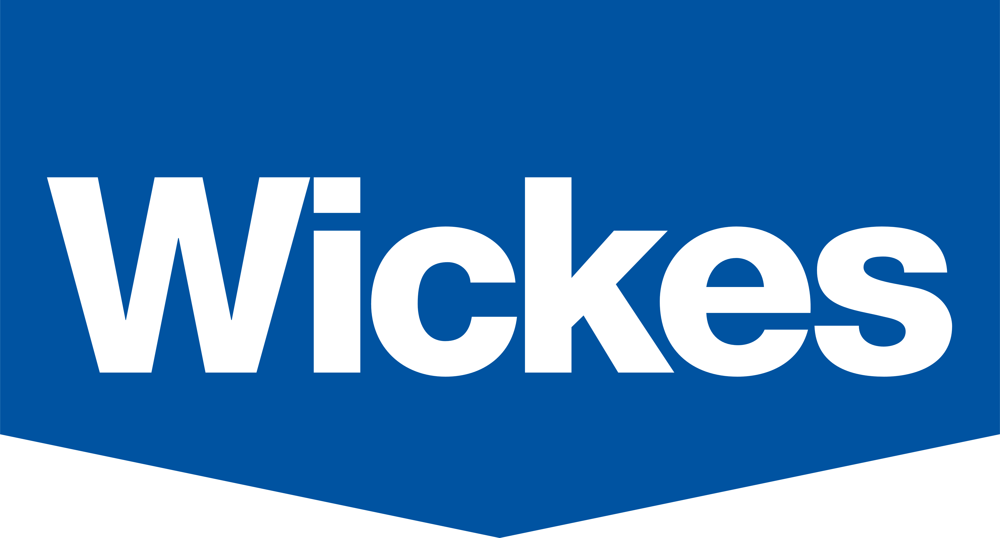
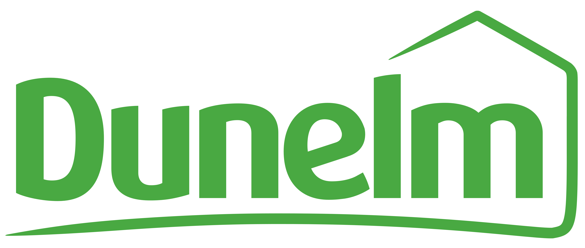
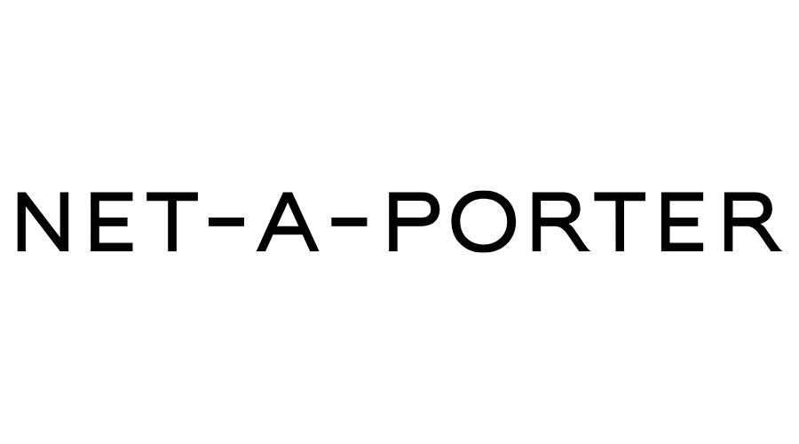

Wickes - Product Owner
At Wickes, I am the product owner of Search and CMS. I was brought in to identify different Search and CMS platforms providers, evaluate their solutions based on business objectives and then be part of the implementation team to deliver each solution in an agile approach. To deliver these solutions I worked within waterfall and agile ways of working to ensure visibility & stakeholder buy-in across all departments.
- Ran discovery sessions to determine Search & CMS MVP
- Worked within waterfall and agile methodologies
- Helped business identify objectives before evaluating suppler solutions
- Worked with external development teams throughout both implementations

Dunelm - Product Owner
I joined Dunelm as they started their digital and agile transformation. Throughout the digital transition to a micro-service architecture, I created and managed the road map of the user journey from arrival to the site to check-out. This also involved re-working business processes which enabled the team and business to work in a lean agile manner to deliver goals/objectives.
- Identified an MVP for site migration
- Drastically removed features from MVP
- Coached business through an agile transformation
- Introduced Story Mapping
- Reduced steps to purchase
- Increased Product and Purchase path click-through rates

YOOX NET-A-PORTER - Product Owner
I was responsible for The Outnet’s Purchase Path, My Account, Content and Localisation projects across Desktop, IOS and Android platforms. These responsibilities range from coordinating across different platforms teams to ensure smooth feature deliver especially when features are delivered across multiple channels simultaneously and liaising between business heads to prioritize the front-end backlog and aligning roadmap with backend development and strategy.
- Delivered multiple seasonal marketing campaigns
- Introduced and executed content marketing
- Envisioned then implemented selling product through Social Media
- Improved core customer journey with intent to increase conversions
- Rebuilt navigation with mobile first design approach
- Migrated site content onto a CMS and managed business training